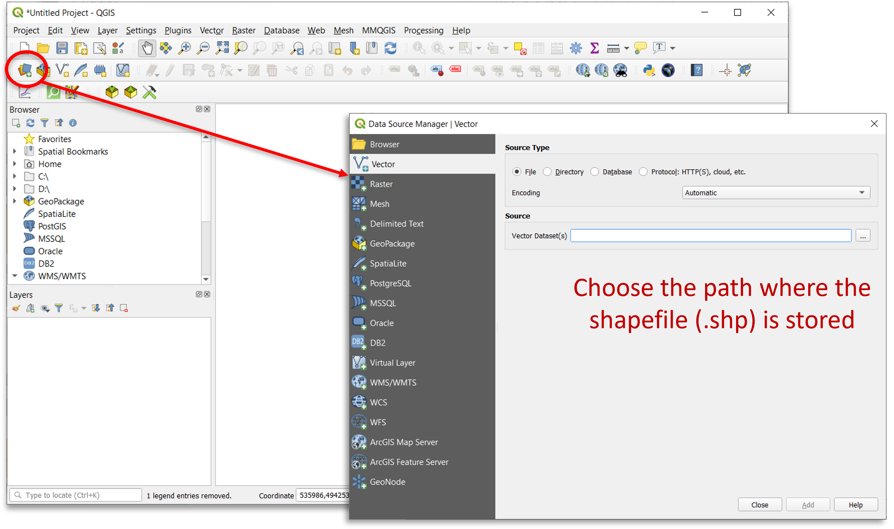

Introduzione
Che cos'è un GIS?
Un GIS (Geographic Information System) è un sistema informativo computerizzato che permette di acquisire, registrare, analizzare, visualizzare, restituire, condividere e presentare informazioni da dati geografici (georiferiti).
Permette quindi di associare i dati alla loro posizione geografica sulla superficie terrestre e di elaborarli per estrarne informazioni.
I principali software GIS disponibili sono:
- ArcGIS
- QGIS
- GeoMedia
- SagaGIS ...
Perché QGIS?
E' un software:
- Free and Open Source
- In forte evoluzione -> Ogni 4 mesi viene rilasciata una nuova release
Inoltre, QGIS ha il grande vantaggio per chi lavora con versioni più datate di poter gestire anche progetti realizzati con versioni più recenti.

Le funzionalità principali
- Visualizzazione dei dati:
si possono visualizzare e sovrappore dati vettoriali e raster in diversi formati e proiezioni cartografiche.
- Esplorazione di dati e creazione di mappe:
si possono comporre mappe ed esplorare interattivamente dati spaziali tramite una facile interfaccia grafica.
- Creazione, editing, gestione, esportazione:
possono essere eseguite analisi spaziali di dati.
- Collegamento a DB esterni
è possibile visualizzare e interrogare dati memorizzati su DB (es. MySQL, PostgreSQL...) esterni.
- Pubblicazione di mappe sul web
con plugin nativi e non, QGIS permette di definire le impostazioni per realizzare una mappa interattiva da condividere su pagine web.
...e molto altro!
Graphic User Interface
La GUI di QGIS Desktop è principalmente composta da:
- Barra dei menù dove è possibile trovare le principali funzionalità di progetto QGIS raggruppate per tematiche.
- Barra delle applicazioni personalizzabile che include le scorciatoie ai tool di più comune utilizzo per la manipolazione dei dati in ambiente GIS.
- Elenco dei layers caricati che indica quali dati sono stati inseriti nel progetto, specificandone le caratteristiche, la simbologia e la visibilità.
- Area di visualizzazione layers ovvero la map canvas su cui è possibile valutare graficamente la componente geografica e geometrica dei dati.
- Barra di stato che indica lo stato di avanzamento di eventuali processamenti avviati ed eventuali errori riscontrati.

Gestione dati
Come vengono gestiti i dati geografici in QGIS?
Cosa serve per lavorare in QGIS?
- Saper gestire dati geografici nei diversi sistemi di coordinate geografiche e/o proiettate;
- Saper gestire un progetto;
- Saper importare:
- Dati vettoriali (e.g. shapefile .shp, GeoJSON .geojson...)
- Dati raster (e.g. .tiff)
- Comprendere la logica dei plugins
A cosa serve un sistema di riferimento?
Sistema di riferimento -> insieme di regole che ci consentono di risalire alla posizione nello spazio in maniera univoca.
Questo concetto tipicamente geometrico è ancora più importante in cartografia per localizzare correttamente un punto appartenente al territorio.

Sistema di riferimento geografico
Sicuramente il sistema di riferimento geografico è il più conosciuto e comprensivo e forse anche uno tra i più potenti sistemi di georeferenziazione.
Esso è metrico, standard, stabile, unico.
Utilizza un riferimento ben definito e fisso basato su:
- asse di rotazione terrestre
- centro di massa
- meridiano di riferimento di Greenwich
- equatore
[INSERIRE IMMAGINE]
Normalmente si usano diversi SR per planimetria e altimetria.
- planimetria: riferimento ellissoidico (sferico per piccole o grandi scale). Perché non lo uso per l'altimetria? Perché privo di legame con il campo della gravità.

- altimetria: riferimento geoidico (non ha descrizione analitica semplice). Perché non lo uso per la planimetria? Di impiego molto complesso nel trattamento delle osservazioni effettuate per la planimetria (angoli e distanze).

Datum
Un datum (geodetico) è un sistema geodetico di riferimento che consente di definire in termini matematici la posizione di punti sulla superficie della Terra.
Datum -> Insieme di parametri che definiscono la forma dell'ellissoide usato ed il suo orientamento.
Un datum è costituito da 8 parametri:
- 2 di forma dell'ellissoide;
- 6 di posizione e di orientamento:
- latitudine e longitudine ellissoidica (2)
- altezza geoidica
- 2 componenti della deviazione della verticale
- azimut ellissoidico
Proiezioni
La superficie della terra è curva ma ci sono molte ragioni che ci spingono a rappresentarla su piano, anch in cartografia numerica.
- La carta utilizzata per rappresentare i risultati di analisi fatte con GIS è piatta.
- Le carte piatte sono scansionate ed utilizzate per creare dati GIS.
- Il modello raster è piatto
- Non si può vedere contemporaneamente tutta la terra su una superficie curva
- E' molto più facile effettuare misure nel piano (aree, distanze, direzioni).
Per queste ragioni anche in cartografia numerica si utilizzano le diverse proiezioni cartografiche.

Le proiezioni cartografiche trasportano coordinate dall'ellissoide del sistema di riferimento al piano della carta. Le due superfici non sono topologicamente equivalenti, quindi non è possibile passare da ellissoide a carta senza deformazioni.
A seconda del tipo di forma usato per effettuare le proiezioni, si distinguono:
- proiezioni piane;
- proiezioni cilindriche;
- proiezioni coniche.
Ci sono moltissimi tipi di proiezioni cartografiche, quelle utilizzate in Italia sono:
- UTM (Universal Trasversal Mercator), utilizzata a livello mondiale;
- Gauss-Boaga, utilizzata per il datum Roma 40 Monte Mario;
- Cassini-Soldner, utilizzata dal Nuovo Catasto dei Terreni Italiano.
In definitiva, la definizione di un sistema di riferimento è data da:
- sistemi di coordinate geografiche:
Datum (es. WGS84 oppure Roma 40 Monte Mario)
- sistemi di coordinate proiettate:
Datum + sistema di proiezione (es. WGS84-UTM32N oppure Roma 40 Monte Mario - Gauss Boaga Fuso Ovest)
Inoltre tutti i GIS utilizzano i registri di parametri geometrici di cui il più conosciuto è quello rappresentato dai codici EPSG (European Petroleum Survey Group) per definire in maniera univoca i vari sistemi di riferimento mondiali.
Come gestisce QGIS i dati geografici?
La gestione dei sistemi di riferimento è sempre un elemento particolarmente delicato in un GIS.
In QGIS esistono 2 diverse gestioni di sistemi di riferimento:
- S.R. del progetto
- S.R. del singolo layer
QGIS è in grado di eseguire la riproiezione al volo dei singoli layer tramite le librerie proj4, purché sia definito il S.R. del singolo layer.
QGIS usa i codici EPSG (European Petroleum Survey Group) per definire in maniera univoca i vari sistemi di riferimento mondiali.
Impostazioni SR
Dalle impostazioni (Impostazioni -> Opzioni -> SR tab) è possibile definire le regole con cui gestire i SR dei vari layer.
Permette di definire quale SR adottare al momento dell'apertura di un nuovo progetto o come gestire i layers privi di informazioni circa il sistema di riferimento utilizzato.
[INSERIRE IMMAGINE]
SR del layer
Il SR del singolo layer è gestibile cliccando con il tasto destro del mouse sul layer stesso.
[INSERIRE IMMAGINE]
[INSERIRE IMMAGINE]
Riproiezione - Shapefile
E' possibile gestire la ri-proiezione dei vettori: tasto destro sul layer -> Salva con nome...
[INSERIRE IMMAGINE]
Modellazione della realtà con QGIS
Esistono principalmente due modi di concettualizzare o modellare la realtà da un punto di vista geografico considerando:
- Oggetti discreti: possono essere osservati o descritti nel mondo reale ed identificati da una sua posizione.

- Oggetti distribuiti: rappresentano una grandezza il cui valore è funzione della posizione e si può misurare in ogni luogo.

Il modello vettore in cui le informazioni su oggetti discreti sono codificate ed archiviate come insieme di coordinate x, y, z.
Il modello vettoriale indica una rappresentazione di entità geografiche attraverso:
- Punti
- Linee
- Poligoni
I modelli vettoriali sono particolarmente utili per rappresentare e memorizzare oggetti discreti come edifici, strade, particelle, etc.
Nel modello vettoriale le informazioni su oggetti discreti sono codificate e archiviate come insieme di coordinate x, y, z.

Il modello raster in cui informazioni su oggetti continui sono codificate da un insieme di celle di una griglia, ciascuna con il suo valore relativo.
I valori sono celle di una griglia con determinate estensioni e una determinata risoluzione.

Importazione shapefile



Gestione proprietà shapefile
Per modificare le proprietà dello shapefile, cliccare sul layer con il tasto destro e selezionare proprietà.
[INSERIRE IMMAGINE]
Stile
Visualizzazione con singolo simbolo
[INSERIRE IMMAGINE]
E' possibile anche impostare la trasparenza del layer che può essere utile nei casi in cui si vuole sovrappore questo ad un altro strato informativo (es. un'ortofoto).
Visualizzazione con simbolo categorizzato in base ai valori contenuti in un campo del layer.
[INSERIRE IMMAGINE]
L'utilizzo di questo stile permette anche di assegnare a ogni valore individuato un'etichetta da includere nella legenda. In questo modo il significato del campo scelto e dei suoi valori risulta ancora più chiaro e comprensibile.
[INSERIRE IMMAGINE]
Etichette
Per identificare meglio i comuni è possibile inserire anche le etichette relative ad ogni unità geometrica: cliccare su etichette -> Selezionare Etichette singole e scegliere quale Valore far comparire.
[INSERIRE IMMAGINE]
[INSERIRE IMMAGINE]
Dati vettoriali
Tabella attributi
Per visualizzare la tabella con i comuni della provincia di PC, cliccare con il tasto destro sul layer nel pannello layer -> premere Apri tabella attributi
Aggiunta campo
Tasto destro sul layer -> Apri tabella attributi -> Attiva modifiche -> Nuovo campo
[INSERIRE IMMAGINE]
Definire i campi richiesti con particolare attenzione al tipo di valore che verrà inserito nel nuovo campo (numero intero, decimale, testo, data, etc.) e il numero massimo di caratteri.
[INSERIRE IMMAGINE]
Per finalizzare le modifiche, salvare e concludere la sessione di editing.
Calcolatore di campi
Tasto destro sul layer -> Apri tabella attributi -> Attiva modifiche -> Apri il calcolatore di campi
[INSERIRE IMMAGINE]
Con il calcolatore di campi è possibile creare un nuovo campo con il risultato della funzione scelta oppure aggiornarne uno esistente.
[INSERIRE IMMAGINE]
Rimuovi campo
Tasto destro sul layer -> Apri tabella attributi -> Attiva modifiche -> Elimina campo
[INSERIRE IMMAGINE]
Selezionare il campo di interesse e confermare la rimozione.
[INSERIRE IMMAGINE]
Per finalizzare le modifiche, salvare e concludere la sessione di editing.
Dati raster
Che cos'è un raster?
[INSERIRE IMMAGINE]
Un dato fondamentale per le analisi GIS sono i cosiddetti Digital Terrain Model (DTM) ma ci sono anche Ortofoto, Carte tecniche, foto aree, immagini satellitari, mappe geologiche etc.
Modelli digitali delle altezze
-
DEM (Digital Elevation Model) è un file digitale con le quote della superficie del terreno a intervalli regolarmente spaziati sul piano orizzontale.
-
DTM (Digital Terrain Model) avrebbe un significato più generico indicando oltre alla quota della superficie del terreno anche altre informazioni come pendenza ed esposizione.
-
DSM (Digital Surface Model) rappresenta in forma digitale le quote della parte superiore del terreno comprensivo degli edifici, delle infrastrutture e degli alberi senza le procedure di filtraggio utilizzare per produrre DEM e/o DTM.
[INSERIRE IMMAGINE]
Ortofoto
E' una mappa fotografica che combina le caratteristiche di una mappa tradizionale con quelle di un'immagine. E' georeferenziata, priva di distorsioni e con scala uniforme.
Importare un raster
[INSERIRE IMMAGINE]
Riproiezione
La riproiezione raster tramite le librerie GDAL: *Raster -> Proiezioni -> Riproiezione
[INSERIRE IMMAGINI]
Proprietà
Per modificare le proprietà del raster, cliccare sul tasto destro e selezionare proprietà:
[INSERIRE IMMAGINE]
Stile
Modificare lo stile:
- Banda singola grigia
- Colori banda multipla
- Valori a tavolozza
- Banda singola falso colore
- Omreggiatura
...e altre opzioni statistiche.
[INSERIRE IMMAGINE]
[IN COSTRUZIONE//]